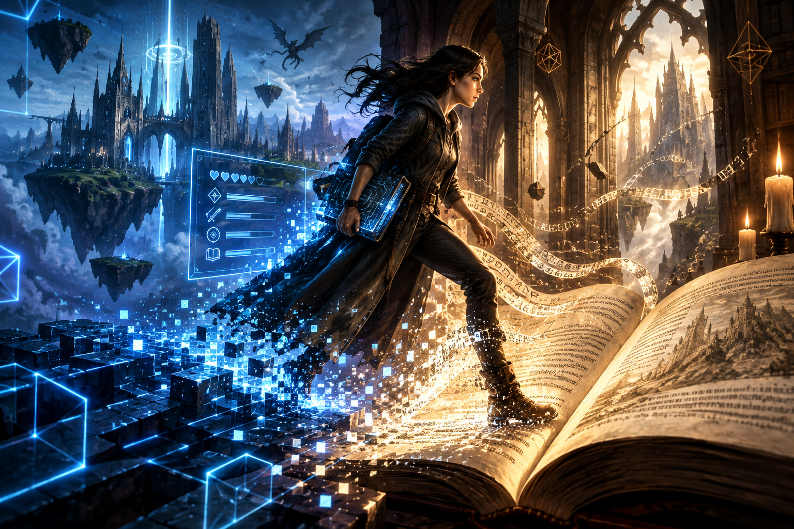
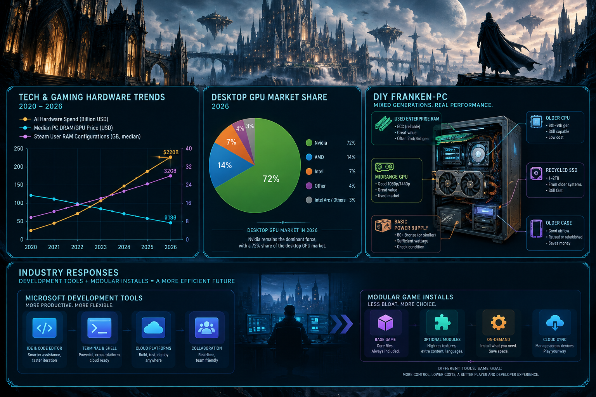
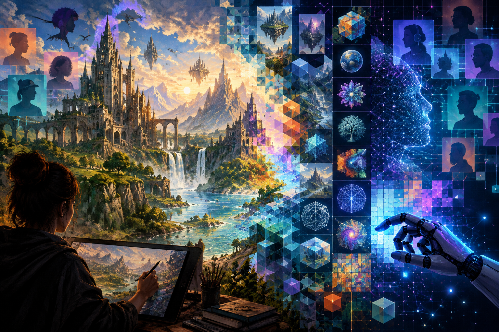

From Pixels to Pages: How LitRPG is Redefining Storytelling in 2026
Blending gaming mechanics with narrative fiction, the LitRPG movement is forging a dynamic new space at the intersection of gaming and literature. How is this genre rewriting our expectations of both stories and play?
READ THE STORY ↗
The AI Pipeline Strain: How PC Gamers Are Navigating 2026’s Hardware Price Crunch
With AI’s voracious demand for memory and graphics cards disrupting supply, PC gamers in 2026 are confronted by spiking prices and scarce stock. Here’s how the gaming community is adapting with new strategies, smarter builds, and a focus on resilience over raw speed.
READ THE STORY ↗
Scripted by Machines, Played by Millions: How AI-Generated Content Is Changing the Landscape of MMORPGs
With the arrival of advanced AI systems, MMORPGs are embracing tools that generate art, items, and even scenarios—but how does this shift shape player engagement and the future of these digital worlds?
READ THE STORY ↗
Unscripted Adventures: How Emergent Gameplay is Reshaping RPGs in 2026
Emergent gameplay in RPGs is transforming how players experience story, challenge, and creativity. This expansive feature examines the rise of dynamic systems, the philosophies that drive them, what makes emergent moments memorable, and how player creativity is steering a new golden age of unscripted play.
READ THE STORY ↗Split-Screen Resurgence: Why Modern Consoles Are Bringing Couch Co-Op Back to Our Living Rooms
Modern consoles are sparking a return to split-screen and couch co-op play. Here’s how technical innovation, shifting player demands, and strategic franchise moves are creating a new era for local multiplayer.
READ THE STORY ↗